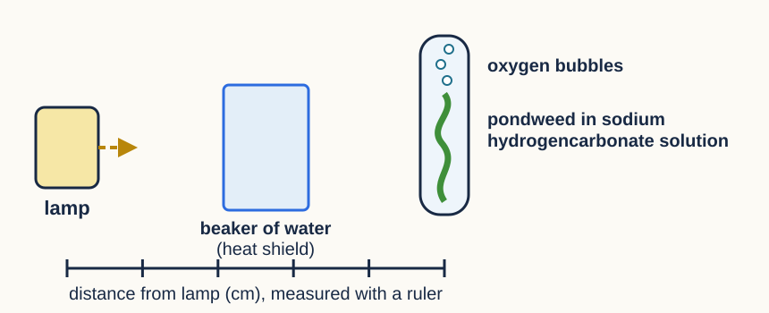

Question: How does light intensity affect the rate of photosynthesis in pondweed?

| Letter | Finish the sentence in your plan |
|---|---|
| C | Change: what you change, and its values I will change the ____________ by moving the lamp to ___, ___, ___, ___ and ___ cm from the pondweed. |
| O | Organism: keep the living thing the same I will use the same ____________ of pondweed, ______ cm long, at every distance. |
| R | Repeat I will repeat each distance ___ times and calculate a ____________. |
| M1 | Measure what: the result you record I will count the number of ____________ released. |
| M2 | Measure how: how long, and when I will count for ___ minute(s), after leaving the pondweed ___ minutes at each new distance. |
| S | Same: variable + how you keep it the same I will keep the ____________ the same by ____________________. I will keep the ____________ the same by ____________________. |